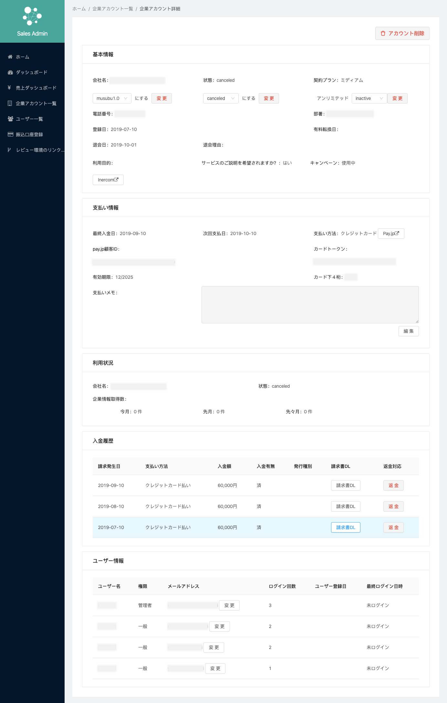

Baseconnect LIST(MUSUBU)
「Baseconnect LIST 」は情報収集やリスト作成、案件管理といった幅広い業務をサポートし、ユーザと新しい顧客を結ぶ法人営業支援データベースです。
リリースから2年で約28,000社に導入されています。
2019年11月に「Baseconnect LIST」は「Musubu」にリニューアルリリースしました。
URL
担当
UIデザイン/コーディング（Sketch / React.js / SCSS）
-「Musubu」開発プロジェクトへの参加 -
担当箇所
・UIデザイン、コーディング
・モバイル対応
・ローンチ後の機能改善
・バージョンアップリリース準備


プラン_年契約以外 after.png)

実際に担当した部分・参加プロジェクトの例
・企業検索/サイドバー、検索モーダルUI改善（UIデザイン、コーディング）
・サーチキット脱却プロジェクト（UIデザイン、コーディング）
・設定/アカウント情報、プラン変更、情報取得状況などのUI改善（UIデザインのみ）
・案件管理/ボードビューUI改善（UIデザインのみ）
・バグ修正（コーディング）
Ex1.設定_プラン変更画面
Before
After

課題
一つのカードに3列に分けてデータが記載されておりボタンとデータの関連性が分かりにくい。
ボタンデザインが統一されておらずどのボタンがどんなニュアンスを持つか直感的に分かりにくい。
UI改善
・カード内の構成を2列にし変更ボタンがある項目は右に揃えるなどユーザが直感的に操作し変更が行えるようにした。
・重要な項目はタグ付とカラーリングを行いユーザが直感的に項目を探せるようにした。
・カードタイトルにバックグラウンドを入れ纏まりを持たせた。
・変更ボタンは青、返金は赤などボタンの意味によってデザインを統一した。
Ex2.案件管理_ボードビューUI改善
Before
After
課題
一つのカードに3列に分けてデータが記載されておりボタンとデータの関連性が分かりにくい。
ボタンデザインが統一されておらずどのボタンがどんなニュアンスを持つか直感的に分かりにくい。
UI改善
・カード内の構成を2列にし変更ボタンがある項目は右に揃えるなどユーザが直感的に操作し変更が行えるようにした。
・重要な項目はタグ付とカラーリングを行いユーザが直感的に項目を探せるようにした。
・カードタイトルにバックグラウンドを入れ纏まりを持たせた。
・変更ボタンは青、返金は赤などボタンの意味によってデザインを統一した。